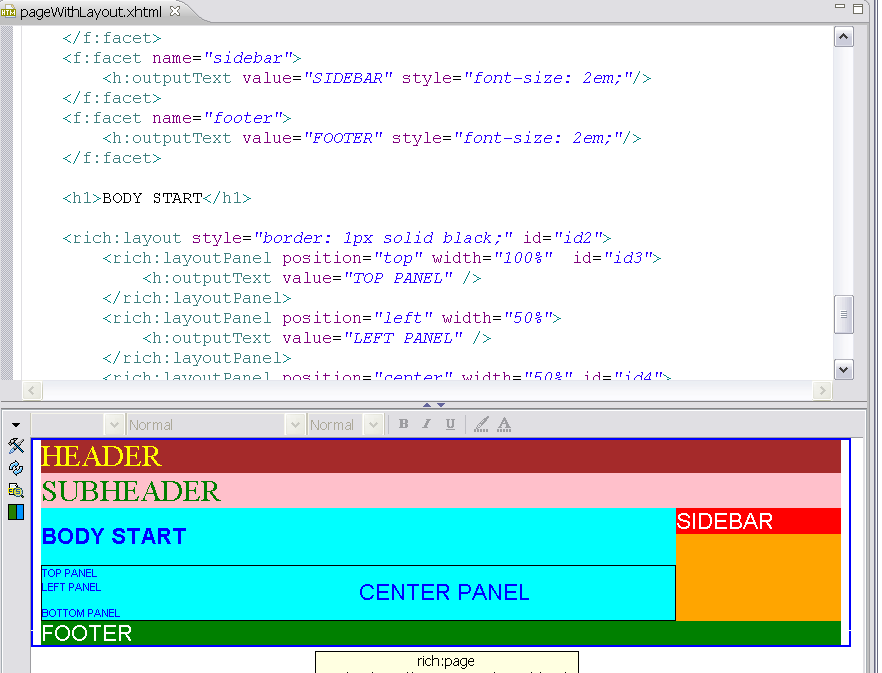
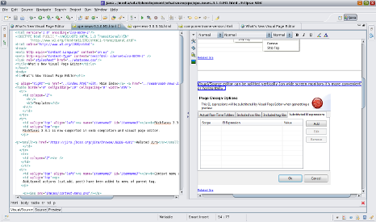
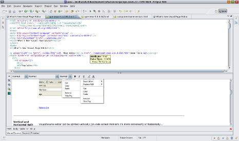
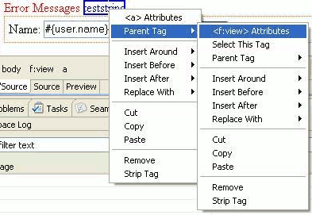
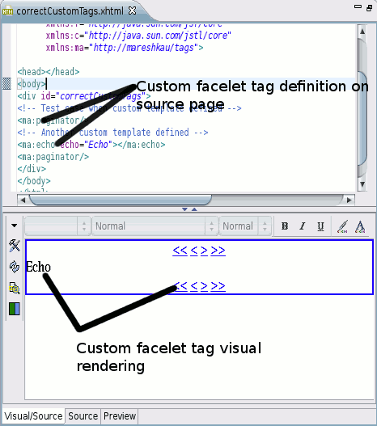
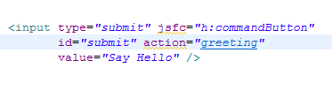
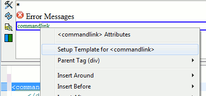

Visual Page Editor Templates
|
| Richfaces
Layout Tags |
Richfaces 3.3 have added a good set of improvements
done in the area of layout. The Visual page Editor now
supports the new tags in 3.3 especially the layout
support (i.e. rich:layoutPanel).
The visual page editor will obey the layout options that Richfaces
provide and give a good approximation of how the Richfaces tags will
render.

Related Jira
|
Visual Page Editor Core
|
| Vertical
and Horizontal Split |
Visual/Source editor can now be splitted vertically (on wide screen
monitors it's more convenient) or horizontally.


Related Jira
|
|
| Context
menu adjustment |
In the visual editor the "Parent Tag" menu for the
context menu of elements now includes additional
actions (cut,copy and paste) to allow for easier
manipulation of the XML structure beneath.

Related Jira
|
|
| Custom facelet components |
Custom facelet compontents defined via xhtml files are now rendered in the visual editor.
For example if you have a facelets.taglib.xml with the following content:
<namespace>http://mareshkau/tags</namespace>
<tag>
<tag-name>echo</tag-name>
<source>components/echo.xhtml</source>
</tag>
Then when the visual editor see's a echo tag from the mareshkau namespace, it will include the components/echo.xhtml in the rendering of the page.
It will even do the proper attribute reference replacements, which is shown in the following snapshot by having ${echo} be replaced with the contents of the echo attribute (in this case the string "Echo").

Related Jira
|
|
| Page Design options Import/Export |
Page Design Options is now saved in Eclipse Preferences allowing to import/export these settings to avoid manually setup items such as EL expression overrides.
Related Jira
|
Source editor
|
| OpenOn for Richfaces |
Our OpenOn's will now also work for those who prefer to use 'jsfc' attribute instead of the XML based facelet format.

Related Jira
|
|
| OpenOn for Richfaces |
Both source and visual editor now have the context menu action to setup template for unknown tags. The menu also now state which template the setup is done for to make it easier to understand what the action will do.

Related Jira
|